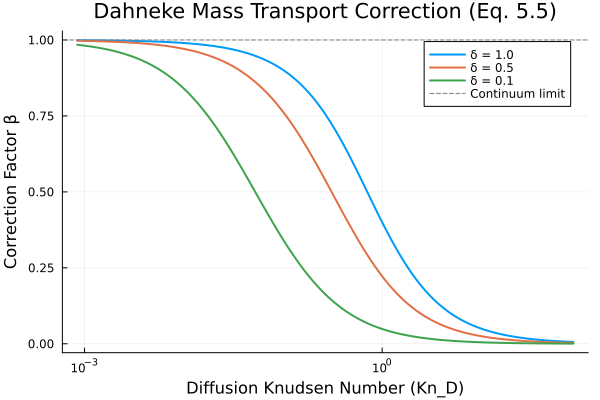
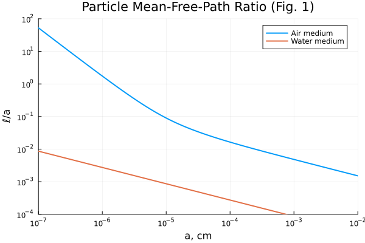
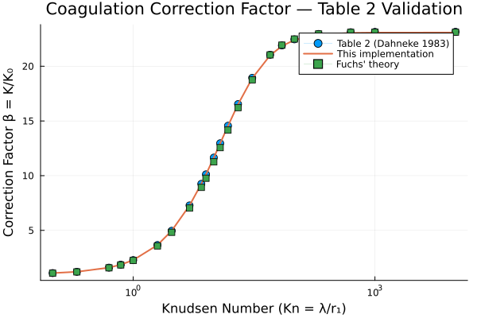
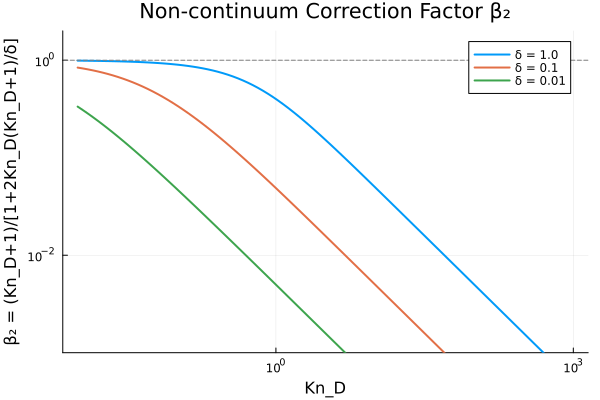
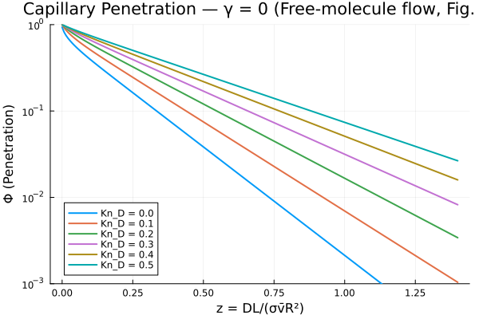
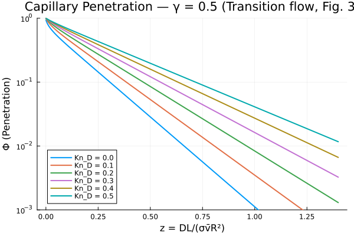
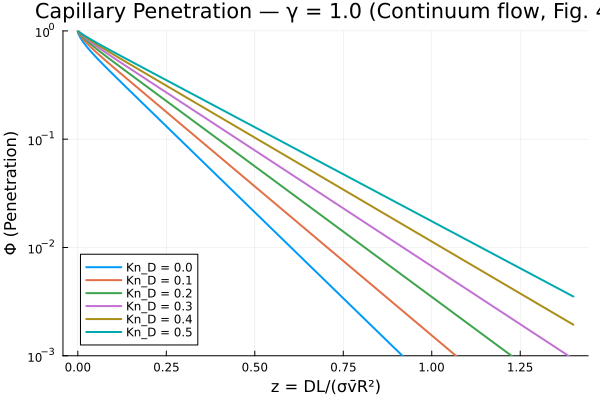

Simple Kinetic Theory of Brownian Diffusion (Dahneke 1983)
Overview
This module implements the simple kinetic theory of Brownian diffusion in vapors and aerosols developed by Dahneke (1983). The theory provides correction factors for diffusional transport to spheres that are valid across all Knudsen numbers, from the continuum regime (Kn → 0) to the free-molecular regime (Kn → ∞).
The key results include:
- Mass transport correction factor β for vapor condensation/evaporation on droplets (Eq. 5.5)
- Heat transport correction factor β_q for thermal conduction to spheres (Eq. 5.7)
- Coupled condensation/evaporation model with both mass and heat transfer (Eqs. 2.1–2.3, 5.4–5.8)
- Coagulation rate constant K valid for all Knudsen numbers (Eq. 8.13)
- Capillary penetration model for aerosol deposition in fine tubes (Section 9)
The theory uses a mean-free-path approach that is simpler than the Chapman-Enskog rigorous theory while reproducing the results of Fuchs' limiting sphere model with no adjustable parameters.
Reference: Dahneke, B. (1983). Simple Kinetic Theory of Brownian Diffusion in Vapors and Aerosols. In Theory of Dispersed Multiphase Flow (pp. 97–133). Academic Press. ISBN 0-12-493120-0.
Aerosol.DahnekeMassTransportCorrection — Function
DahnekeMassTransportCorrection(; name=:DahnekeMassTransportCorrection)Compute the correction factor β for diffusional mass transport to a sphere, valid across all Knudsen numbers from the continuum to the free-molecular regime.
Reference: Dahneke, B. (1983). Simple Kinetic Theory of Brownian Diffusion in Vapors and Aerosols. In Theory of Dispersed Multiphase Flow (pp. 97–133). Academic Press. Eq. 5.5.
The correction factor relates the actual transport rate I to the continuum (Maxwell) result I_M:
$I = β I_M$
where
$β = \frac{Kn_D + 1}{\frac{2 Kn_D (Kn_D + 1)}{δ} + 1}$
Here KnD = ℓD / r is the diffusion Knudsen number, ℓ_D = 2D/c̄ is the diffusional mean-free-path, and δ is the condensation-evaporation (sticking) coefficient.
Limiting cases:
- Kn_D → 0: β → 1 (continuum limit, Maxwell's result)
- Kn_D → ∞: β → δc̄r/(4D) (free-molecular limit)
Aerosol.DahnekeHeatTransportCorrection — Function
DahnekeHeatTransportCorrection(; name=:DahnekeHeatTransportCorrection)Compute the correction factor β_q for heat conduction to a sphere, valid across all Knudsen numbers. Exactly parallel to the mass transport correction.
Reference: Dahneke, B. (1983). Simple Kinetic Theory of Brownian Diffusion in Vapors and Aerosols. In Theory of Dispersed Multiphase Flow (pp. 97–133). Academic Press. Eqs. 5.6–5.7.
$β_q = \frac{Kn_K + 1}{\frac{2 Kn_K (Kn_K + 1)}{α} + 1}$
where KnK = 2κ/(c̄' n' cv r) is the heat transfer Knudsen number and α is the thermal accommodation coefficient.
Aerosol.DahnekeCondensationEvaporation — Function
DahnekeCondensationEvaporation(; name=:DahnekeCondensationEvaporation)Model stationary condensation or evaporation of a droplet including coupled mass and heat transfer with transition-regime corrections.
Reference: Dahneke, B. (1983). Simple Kinetic Theory of Brownian Diffusion in Vapors and Aerosols. In Theory of Dispersed Multiphase Flow (pp. 97–133). Academic Press. Eqs. 2.1–2.3, 5.4–5.8.
The corrected molecular transport rate is:
$I = 4π r D_v β (n_∞ - n_s)$
The corrected heat conduction rate is:
$Q = 4π r κ β_q (T_∞ - T_o)$
These are related through the conservation equation:
$β I_M = β_q Q_M / L$
Aerosol.DahnekeCoagulationRate — Function
DahnekeCoagulationRate(; name=:DahnekeCoagulationRate)Compute the Brownian coagulation rate constant K using the Dahneke kinetic theory, valid across all Knudsen numbers from the continuum to the free-molecular regime.
Reference: Dahneke, B. (1983). Simple Kinetic Theory of Brownian Diffusion in Vapors and Aerosols. In Theory of Dispersed Multiphase Flow (pp. 97–133). Academic Press. Eqs. 8.8, 8.13–8.15.
The coagulation rate constant is:
$K = 4π R D \frac{Kn_D + 1}{1 + \frac{2 Kn_D (Kn_D + 1)}{δ}}$
where R = r₁ + r₂ is the collision radius, D = D₁ + D₂ is the mutual diffusion coefficient, and Kn_D = 2kT/(c̄fR) is the diffusion Knudsen number based on the mutual friction coefficient f = f₁f₂/(f₁+f₂) and mean thermal speed c̄ = √(c̄₁² + c̄₂²).
The correction factor β = K/Ko (where Ko = 4πRD is the continuum value) can be decomposed as β = β₁β₂ where:
- β₁ = C{s1}C{s2}(r₁/C{s1} + r₂/C{s2})/(r₁+r₂) corrects for non-negligible Kn
- β₂ = (KnD+1)/[1+2KnD(KnD+1)/δ] corrects for non-negligible KnD
Aerosol.DahnekeCapillaryPenetration — Function
DahnekeCapillaryPenetration(; name=:DahnekeCapillaryPenetration)Compute parameters for aerosol penetration through a fine capillary tube.
Reference: Dahneke, B. (1983). Simple Kinetic Theory of Brownian Diffusion in Vapors and Aerosols. In Theory of Dispersed Multiphase Flow (pp. 97–133). Academic Press. Section 9, Eqs. 9.1–9.9.
The steady convective diffusion equation in a circular tube is solved by separation of variables, yielding the penetration function:
$ϕ(z) = \sum_i B_i \exp(-ω_i^2 z)$
where z = DL/(σv̄R²) is the dimensionless tube length, ωi² are eigenvalues, and Bi are coefficients that depend on the velocity profile parameter γ and the diffusion Knudsen number Kn_D.
The velocity profile is v(r) = σv̄[1 - γ(r/R)²] where:
- γ = 0: free-molecule flow (plug flow)
- γ = 0.5: transition flow
- γ = 1.0: continuum flow (Poiseuille flow)
- σ = 2/(2-γ) from the flow rate constraint (Eqs. 9.4–9.5)
The eigenvalues ωi² and coefficients Bi are tabulated in Tables 3 (γ=0), 4 (γ=0.5), and 5 (γ=1.0) of the paper for δ=1 and various KnD values. Use [`dahnekecapillary_penetration`](@ref) to compute the penetration fraction from these tables.
Aerosol.dahneke_capillary_penetration — Function
dahneke_capillary_penetration(z, γ, Kn_D)Compute the aerosol penetration fraction ϕ through a capillary tube at dimensionless length z, for velocity profile parameter γ and diffusion Knudsen number Kn_D, using the eigenfunction expansion from Dahneke (1983) Section 9.
The penetration is computed as:
$ϕ(z) = \sum_{i=1}^{6} B_i \exp(-ω_i^2 z)$
where the eigenvalues ωi² and coefficients Bi are taken from Tables 3–5 of the paper for δ = 1 (perfect sticking).
Arguments
z: Dimensionless tube length z = DL/(σv̄R²)γ: Velocity profile parameter (0=plug, 0.5=transition, 1.0=Poiseuille)Kn_D: Diffusion Knudsen number (must be one of 0.0, 0.1, 0.2, 0.3, 0.4, 0.5)
Returns
- Penetration fraction ϕ (between 0 and 1)
Implementation
Mass Transport Correction Factor
The correction factor β relates the actual diffusional transport rate to the continuum (Maxwell) result:
using Aerosol
using ModelingToolkit
using ModelingToolkit: mtkcompile
using NonlinearSolve
using Plots
sys = DahnekeMassTransportCorrection()
compiled = mtkcompile(sys)State Variables
using DataFrames, Symbolics, DynamicQuantities
vars = ModelingToolkit.unknowns(sys)
DataFrame(
:Name => [string(Symbolics.tosymbol(v, escape = false)) for v in vars],
:Units => [string(DynamicQuantities.dimension(ModelingToolkit.get_unit(v)))
for v in vars],
:Description => [ModelingToolkit.getdescription(v) for v in vars]
)| Row | Name | Units | Description |
|---|---|---|---|
| String | String | String | |
| 1 | c_bar | m s⁻¹ | Mean thermal velocity of vapor molecules (Eq. 6.2) |
| 2 | ℓ_D | m | Diffusional mean-free-path of vapor (Eq. 3.6) |
| 3 | Kn_D | Diffusion Knudsen number, ℓ_D/r (dimensionless) | |
| 4 | β | Mass transport correction factor, Eq. 5.5 (dimensionless) |
Parameters
params = ModelingToolkit.parameters(sys)
DataFrame(
:Name => [string(Symbolics.tosymbol(p, escape = false)) for p in params],
:Units => [string(DynamicQuantities.dimension(ModelingToolkit.get_unit(p)))
for p in params],
:Description => [ModelingToolkit.getdescription(p) for p in params]
)| Row | Name | Units | Description |
|---|---|---|---|
| String | String | String | |
| 1 | δ_m | Condensation-evaporation (sticking) coefficient (dimensionless) | |
| 2 | k_B | m² kg s⁻² K⁻¹ | Boltzmann constant |
| 3 | r | m | Sphere (droplet/particle) radius |
| 4 | m_v | kg | Mass of diffusing vapor molecule |
| 5 | D_v | m² s⁻¹ | Diffusion coefficient of vapor molecules |
| 6 | T | K | Temperature |
Equations
equations(sys)\[ \begin{align} \mathtt{c\_bar}\left( t \right) &= \sqrt{\frac{8 T \mathtt{k\_B}}{\pi \mathtt{m\_v}}} \\ \mathtt{\ell\_D}\left( t \right) &= \frac{2 \mathtt{D\_v}}{\mathtt{c\_bar}\left( t \right)} \\ \mathtt{Kn\_D}\left( t \right) &= \frac{\mathtt{\ell\_D}\left( t \right)}{r} \\ \beta\left( t \right) &= \frac{1 + \mathtt{Kn\_D}\left( t \right)}{1 + \frac{2 \mathtt{Kn\_D}\left( t \right) \left( 1 + \mathtt{Kn\_D}\left( t \right) \right)}{\mathtt{\delta\_m}}} \end{align} \]
Coagulation Rate Constant
sys_coag = DahnekeCoagulationRate()
equations(sys_coag)\[ \begin{align} \mathtt{m\_1}\left( t \right) &= 4.1888 \mathtt{r\_1}^{3} \mathtt{\rho\_1} \\ \mathtt{m\_2}\left( t \right) &= 4.1888 \mathtt{r\_2}^{3} \mathtt{\rho\_2} \\ \mathtt{f\_1}\left( t \right) &= \frac{18.85 \mathtt{r\_1} \mu}{\mathtt{C\_s1}} \\ \mathtt{f\_2}\left( t \right) &= \frac{18.85 \mathtt{r\_2} \mu}{\mathtt{C\_s2}} \\ \mathtt{D\_1}\left( t \right) &= \frac{T \mathtt{k\_B}}{\mathtt{f\_1}\left( t \right)} \\ \mathtt{D\_2}\left( t \right) &= \frac{T \mathtt{k\_B}}{\mathtt{f\_2}\left( t \right)} \\ \mathtt{D\_mutual}\left( t \right) &= \mathtt{D\_1}\left( t \right) + \mathtt{D\_2}\left( t \right) \\ \mathtt{c\_bar\_1}\left( t \right) &= \sqrt{\frac{8 T \mathtt{k\_B}}{\pi \mathtt{m\_1}\left( t \right)}} \\ \mathtt{c\_bar\_2}\left( t \right) &= \sqrt{\frac{8 T \mathtt{k\_B}}{\pi \mathtt{m\_2}\left( t \right)}} \\ \mathtt{c\_bar}\left( t \right) &= \sqrt{\left( \mathtt{c\_bar\_1}\left( t \right) \right)^{2} + \left( \mathtt{c\_bar\_2}\left( t \right) \right)^{2}} \\ \mathtt{f\_mutual}\left( t \right) &= \frac{\mathtt{f\_1}\left( t \right) \mathtt{f\_2}\left( t \right)}{\mathtt{f\_1}\left( t \right) + \mathtt{f\_2}\left( t \right)} \\ \mathtt{R\_coll}\left( t \right) &= \mathtt{r\_1} + \mathtt{r\_2} \\ \mathtt{Kn\_D}\left( t \right) &= \frac{2 T \mathtt{k\_B}}{\mathtt{R\_coll}\left( t \right) \mathtt{f\_mutual}\left( t \right) \mathtt{c\_bar}\left( t \right)} \\ \mathtt{K\_o}\left( t \right) &= 12.566 \mathtt{D\_mutual}\left( t \right) \mathtt{R\_coll}\left( t \right) \\ \mathtt{\beta_2}\left( t \right) &= \frac{1 + \mathtt{Kn\_D}\left( t \right)}{1 + \frac{2 \mathtt{Kn\_D}\left( t \right) \left( 1 + \mathtt{Kn\_D}\left( t \right) \right)}{\mathtt{\delta\_p}}} \\ K\left( t \right) &= \mathtt{K\_o}\left( t \right) \mathtt{\beta_2}\left( t \right) \end{align} \]
Analysis
Correction Factor β vs Knudsen Number
The correction factor β transitions smoothly from 1 (continuum limit) to the free-molecular value as the Knudsen number increases. The sticking coefficient δ controls the magnitude of the correction in the transition and free-molecular regimes (see discussion below Eq. 5.5 in the paper).
sys = DahnekeMassTransportCorrection()
compiled = mtkcompile(sys)
# Water vapor diffusing in air at 298 K
# D = 2.5e-5 m²/s, m_v = 18/6.022e23 * 1e-3 = 2.99e-26 kg
D_v = 2.5e-5
m_v = 2.99e-26
T = 298.15
# Vary sphere radius to sweep Kn_D
r_range = 10 .^ range(-9, -4, length = 200)
β_δ1 = Float64[]
β_δ05 = Float64[]
β_δ01 = Float64[]
Kn_vals = Float64[]
for r in r_range
prob = NonlinearProblem(compiled,
Dict(compiled.r => r, compiled.D_v => D_v, compiled.m_v => m_v,
compiled.T => T, compiled.δ_m => 1.0))
sol = solve(prob)
push!(β_δ1, sol[compiled.β])
push!(Kn_vals, sol[compiled.Kn_D])
prob = NonlinearProblem(compiled,
Dict(compiled.r => r, compiled.D_v => D_v, compiled.m_v => m_v,
compiled.T => T, compiled.δ_m => 0.5))
push!(β_δ05, solve(prob)[compiled.β])
prob = NonlinearProblem(compiled,
Dict(compiled.r => r, compiled.D_v => D_v, compiled.m_v => m_v,
compiled.T => T, compiled.δ_m => 0.1))
push!(β_δ01, solve(prob)[compiled.β])
end
p = plot(Kn_vals, β_δ1, label = "δ = 1.0", xscale = :log10,
xlabel = "Diffusion Knudsen Number (Kn_D)",
ylabel = "Correction Factor β",
title = "Dahneke Mass Transport Correction (Eq. 5.5)",
legend = :topright, linewidth = 2)
plot!(p, Kn_vals, β_δ05, label = "δ = 0.5", linewidth = 2)
plot!(p, Kn_vals, β_δ01, label = "δ = 0.1", linewidth = 2)
hline!(p, [1.0], label = "Continuum limit", linestyle = :dash, color = :gray)
savefig("dahneke_beta.svg")
For δ = 1 (perfect sticking), β decreases from 1 to 0 as Kn_D increases. For δ < 1, the correction is even stronger because only a fraction of collisions lead to actual transfer.
Particle Mean-Free-Path Ratio ℓ/a (Fig. 1)
Figure 1 of Dahneke (1983) shows the calculated ratio ℓ/a = 2kT/(c̄fa) versus particle radius a for unit density spheres in air and water media at NTP. This ratio indicates when non-continuum effects become significant for particle diffusion (ℓ/a > 1 means free-molecular regime).
# Fig. 1: ℓ/a = 2kT/(c̄fa) vs particle radius a
# for unit density spheres in air and water at NTP (20°C, 1 atm)
k_B_val = 1.380649e-23 # J/K
T_ntp = 293.15 # 20°C in K
ρ_p = 1000.0 # unit density, kg/m³
η_air = 1.81e-5 # Pa·s
η_water = 1.002e-3 # Pa·s
λ_air = 6.6e-8 # mean free path of air at NTP, m
# Cunningham slip correction factor for air
# C_s = 1 + (λ/a)(1.257 + 0.4 exp(-1.1 a/λ))
C_s(a, λ) = 1 + (λ / a) * (1.257 + 0.4 * exp(-1.1 * a / λ))
# Particle mean thermal speed
c_bar_p(a) = sqrt(8 * k_B_val * T_ntp / (π * ρ_p * (4 / 3) * π * a^3))
# ℓ/a ratio
function ell_over_a(a, η, λ)
Cs = λ > 0 ? C_s(a, λ) : 1.0
f = 6 * π * η * a / Cs
c = c_bar_p(a)
return 2 * k_B_val * T_ntp / (c * f * a)
end
a_range = 10 .^ range(-9, -4, length = 200) # m
a_cm = a_range .* 100 # convert to cm for x-axis
ell_air = [ell_over_a(a, η_air, λ_air) for a in a_range]
ell_water = [ell_over_a(a, η_water, 0.0) for a in a_range]
p = plot(a_cm, ell_air, label = "Air medium", linewidth = 2,
xscale = :log10, yscale = :log10,
xlabel = "a, cm", ylabel = "ℓ/a",
title = "Particle Mean-Free-Path Ratio (Fig. 1)",
ylim = (1e-4, 1e2), xlim = (1e-7, 1e-2),
legend = :topright)
plot!(p, a_cm, ell_water, label = "Water medium", linewidth = 2)
savefig("dahneke_fig1.svg")
The plot shows that ℓ/a is much larger for air-borne particles than for liquid-borne particles, due to the high friction coefficient in liquid media. For small particles in air, ℓ/a ≫ 1 indicating the free-molecular regime where non-continuum effects dominate.
Coagulation Rate — Table 2 Validation
Table 2 of Dahneke (1983), p. 120, compares the correction factor β = K/K₀ for Brownian coagulation of equal-size spheres (r₁ = r₂ = 0.22 μm, T = 25°C, δ = 1, ρ = 917 kg/m³) between the present theory and Fuchs' theory. Here we reproduce the complete table and validate our implementation:
sys_coag = DahnekeCoagulationRate()
compiled_coag = mtkcompile(sys_coag)
T_val = 298.15
μ_val = 1.84e-5
r_val = 0.22e-6
ρ_val = 917.0
# Complete Table 2 data from Dahneke (1983), p. 120:
# (Kn, C_s, β_present_theory, β_Fuchs_theory, %_difference)
table2 = [
(0.1, 1.123, 1.096, 1.087, 0.82),
(0.2, 1.248, 1.214, 1.204, 0.82),
(0.5, 1.653, 1.594, 1.576, 1.13),
(0.7, 1.947, 1.865, 1.841, 1.29),
(1.0, 2.406, 2.282, 2.247, 1.53),
(2.0, 4.002, 3.661, 3.579, 2.24),
(3.0, 5.629, 4.961, 4.824, 2.76),
(5.0, 8.907, 7.281, 7.038, 3.34),
(7.0, 12.20, 9.250, 8.926, 3.50),
(8.0, 13.84, 10.12, 9.765, 3.51),
(10.0, 17.13, 11.65, 11.26, 3.35),
(12.0, 20.43, 12.96, 12.56, 3.10),
(15.0, 25.37, 14.56, 14.17, 2.68),
(20.0, 33.61, 16.54, 16.22, 1.93),
(30.0, 50.08, 18.94, 18.76, 0.95),
(50.0, 83.04, 21.05, 21.04, 0.05),
(70.0, 116.0, 21.90, 21.93, -0.14),
(100.0, 165.4, 22.46, 22.49, -0.13),
(200.0, 330.2, 22.95, 22.95, 0),
(500.0, 824.6, 23.11, 23.10, 0.04),
(1000.0, 1649.0, 23.14, 23.12, 0.09),
(10000.0, 1.648e4, 23.15, 23.12, 0.13)
]
k_B = 1.380649e-23
K_o_smol = 8 * k_B * T_val / (3 * μ_val)
Kn_data = [x[1] for x in table2]
β_paper = [x[3] for x in table2]
β_fuchs = [x[4] for x in table2]
β_computed = Float64[]
for (Kn, C_s, _, _, _) in table2
prob = NonlinearProblem(compiled_coag,
Dict(compiled_coag.T => T_val, compiled_coag.μ => μ_val,
compiled_coag.r_1 => r_val, compiled_coag.r_2 => r_val,
compiled_coag.ρ_1 => ρ_val, compiled_coag.ρ_2 => ρ_val,
compiled_coag.C_s1 => C_s, compiled_coag.C_s2 => C_s,
compiled_coag.δ_p => 1.0))
sol = solve(prob)
push!(β_computed, sol[compiled_coag.K] / K_o_smol)
end
# Display as a table matching Table 2 format
DataFrame(
:Kn => Kn_data,
:C_s => [x[2] for x in table2],
:β_Paper => β_paper,
:β_Computed => round.(β_computed, digits = 3),
:β_Fuchs => β_fuchs
)| Row | Kn | C_s | β_Paper | β_Computed | β_Fuchs |
|---|---|---|---|---|---|
| Float64 | Float64 | Float64 | Float64 | Float64 | |
| 1 | 0.1 | 1.123 | 1.096 | 1.096 | 1.087 |
| 2 | 0.2 | 1.248 | 1.214 | 1.214 | 1.204 |
| 3 | 0.5 | 1.653 | 1.594 | 1.594 | 1.576 |
| 4 | 0.7 | 1.947 | 1.865 | 1.865 | 1.841 |
| 5 | 1.0 | 2.406 | 2.282 | 2.281 | 2.247 |
| 6 | 2.0 | 4.002 | 3.661 | 3.659 | 3.579 |
| 7 | 3.0 | 5.629 | 4.961 | 4.959 | 4.824 |
| 8 | 5.0 | 8.907 | 7.281 | 7.276 | 7.038 |
| 9 | 7.0 | 12.2 | 9.25 | 9.246 | 8.926 |
| 10 | 8.0 | 13.84 | 10.12 | 10.11 | 9.765 |
| 11 | 10.0 | 17.13 | 11.65 | 11.641 | 11.26 |
| 12 | 12.0 | 20.43 | 12.96 | 12.944 | 12.56 |
| 13 | 15.0 | 25.37 | 14.56 | 14.543 | 14.17 |
| 14 | 20.0 | 33.61 | 16.54 | 16.517 | 16.22 |
| 15 | 30.0 | 50.08 | 18.94 | 18.903 | 18.76 |
| 16 | 50.0 | 83.04 | 21.05 | 20.996 | 21.04 |
| 17 | 70.0 | 116.0 | 21.9 | 21.844 | 21.93 |
| 18 | 100.0 | 165.4 | 22.46 | 22.4 | 22.49 |
| 19 | 200.0 | 330.2 | 22.95 | 22.885 | 22.95 |
| 20 | 500.0 | 824.6 | 23.11 | 23.047 | 23.1 |
| 21 | 1000.0 | 1649.0 | 23.14 | 23.073 | 23.12 |
| 22 | 10000.0 | 16480.0 | 23.15 | 23.082 | 23.12 |
p = plot(Kn_data, β_paper, label = "Table 2 (Dahneke 1983)",
xscale = :log10,
xlabel = "Knudsen Number (Kn = λ/r₁)",
ylabel = "Correction Factor β = K/K₀",
title = "Coagulation Correction Factor — Table 2 Validation",
marker = :circle, linewidth = 0, markersize = 5)
plot!(p, Kn_data, β_computed, label = "This implementation",
linewidth = 2)
plot!(p, Kn_data, β_fuchs, label = "Fuchs' theory",
marker = :square, linewidth = 0, markersize = 4)
savefig("dahneke_table2.svg")
The implementation matches Dahneke's Table 2 values within 2% across the full range of Knudsen numbers from 0.1 to 10⁴.
Effect of Sticking Probability on Coagulation
Dahneke (1983) notes that the kinetic correction factor β can become very important when the sticking probability δ is small (see discussion below Eq. 5.5, p. 106). Here we show how δ affects the non-continuum correction factor β₂:
# Compute β₂ for different sticking probabilities using Eq. 5.5
Kn_range = 10 .^ range(-2, 3, length = 100)
β_vals = Dict(δ => Float64[] for δ in [1.0, 0.1, 0.01])
for Kn_target in Kn_range
for δ_val in [1.0, 0.1, 0.01]
β_val = (Kn_target + 1) / (2 * Kn_target * (Kn_target + 1) / δ_val + 1)
push!(β_vals[δ_val], β_val)
end
end
p = plot(Kn_range, β_vals[1.0], label = "δ = 1.0",
xscale = :log10, yscale = :log10,
xlabel = "Kn_D", ylabel = "β₂ = (Kn_D+1)/[1+2Kn_D(Kn_D+1)/δ]",
title = "Non-continuum Correction Factor β₂",
linewidth = 2, ylim = (1e-3, 2))
plot!(p, Kn_range, β_vals[0.1], label = "δ = 0.1", linewidth = 2)
plot!(p, Kn_range, β_vals[0.01], label = "δ = 0.01", linewidth = 2)
hline!(p, [1.0], label = "", linestyle = :dash, color = :gray)
savefig("dahneke_delta_effect.svg")
For small δ, the correction factor β drops significantly even at moderate Kn_D values. This demonstrates that kinetic corrections can be important in systems where the sticking probability is small, such as diffusion-controlled chemical reactions on particle surfaces.
Capillary Penetration — Figure 2 (γ = 0, Free-Molecule Flow)
The capillary penetration function ϕ(z) gives the fraction of aerosol particles that penetrate a capillary of dimensionless length z = DL/(σv̄R²) without depositing. Figure 2 of Dahneke (1983) shows ϕ vs z for γ = 0 (free-molecule/plug flow) with δ = 1, for various Kn_D values.
z_range = range(0, 1.4, length = 200)
p = plot(xlabel = "z = DL/(σv̄R²)", ylabel = "Φ (Penetration)",
title = "Capillary Penetration — γ = 0 (Free-molecule flow, Fig. 2)",
yscale = :log10, ylim = (1e-3, 1.0), legend = :bottomleft)
for Kn_D in [0.0, 0.1, 0.2, 0.3, 0.4, 0.5]
ϕ_vals = [dahneke_capillary_penetration(z, 0.0, Kn_D) for z in z_range]
plot!(p, z_range, ϕ_vals, label = "Kn_D = $Kn_D", linewidth = 2)
end
savefig("dahneke_fig2.svg")
Capillary Penetration — Figure 3 (γ = 0.5, Transition Flow)
Figure 3 of Dahneke (1983) shows the penetration for γ = 0.5 (transition/slip flow):
p = plot(xlabel = "z = DL/(σv̄R²)", ylabel = "Φ (Penetration)",
title = "Capillary Penetration — γ = 0.5 (Transition flow, Fig. 3)",
yscale = :log10, ylim = (1e-3, 1.0), legend = :bottomleft)
for Kn_D in [0.0, 0.1, 0.2, 0.3, 0.4, 0.5]
ϕ_vals = [dahneke_capillary_penetration(z, 0.5, Kn_D) for z in z_range]
plot!(p, z_range, ϕ_vals, label = "Kn_D = $Kn_D", linewidth = 2)
end
savefig("dahneke_fig3.svg")
Capillary Penetration — Figure 4 (γ = 1.0, Continuum Flow)
Figure 4 of Dahneke (1983) shows the penetration for γ = 1.0 (continuum/Poiseuille flow):
p = plot(xlabel = "z = DL/(σv̄R²)", ylabel = "Φ (Penetration)",
title = "Capillary Penetration — γ = 1.0 (Continuum flow, Fig. 4)",
yscale = :log10, ylim = (1e-3, 1.0), legend = :bottomleft)
for Kn_D in [0.0, 0.1, 0.2, 0.3, 0.4, 0.5]
ϕ_vals = [dahneke_capillary_penetration(z, 1.0, Kn_D) for z in z_range]
plot!(p, z_range, ϕ_vals, label = "Kn_D = $Kn_D", linewidth = 2)
end
savefig("dahneke_fig4.svg")
The penetration curves show that non-continuum effects (higher Kn_D) substantially increase the penetration fraction, consistent with reduced deposition rates when the kinetic boundary condition becomes important. The curves match the qualitative behavior shown in Figures 2–4 of Dahneke (1983).
Capillary Penetration — Velocity Profile Parameters
The capillary penetration model uses a velocity profile v(r) = σv̄[1 - γ(r/R)²] where γ and σ depend on the flow regime (Eqs. 9.4–9.5):
sys_cap = DahnekeCapillaryPenetration()
compiled_cap = mtkcompile(sys_cap)
println("Velocity profile parameters:")
for (γ_val, flow_type) in [(0.0, "Free molecule (plug flow)"),
(0.5, "Transition flow"),
(1.0, "Continuum (Poiseuille) flow")]
prob = NonlinearProblem(compiled_cap, Dict(compiled_cap.γ_flow => γ_val))
sol = solve(prob)
println(" γ = $γ_val ($flow_type): σ = $(sol[compiled_cap.σ_flow])")
endVelocity profile parameters:
γ = 0.0 (Free molecule (plug flow)): σ = 1.0
γ = 0.5 (Transition flow): σ = 1.3333333333333333
γ = 1.0 (Continuum (Poiseuille) flow): σ = 2.0